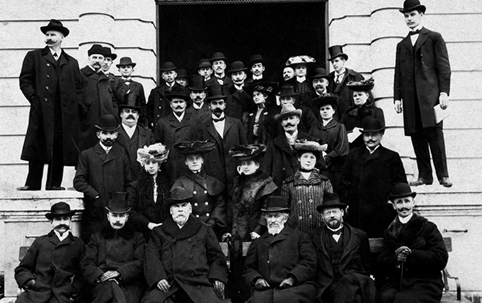

VOLT EGYSZER EGY PETŐFI SÁNDOR GÉPÉSZETI SZAKKÖZÉPISKOLA…
„Hazánkban nappali tagozaton a gépipari technikus képzés 1969 júniusában befejeződött. A technikumokat szakközépiskolákká szervezték reform végrehajtásához és tovább fejlesztéséhez, az országnak több – és jól képzett középfokú képzettségű szakemberre volt szüksége, ezért a gimnáziumok rovására bővítették a szakközépiskolai képzést.
Ebben az időben Bács-Kiskun egyre jobban iparosodott, ezért – megyei szinten – három párhuzamos osztállyal működő megyei beiskolázású jogkörrel rendelkező szakközépiskola
szervezését határozták el.
A választás a kiskunfélegyházi Petőfi Sándor Gimnáziumra esett, mert a városban két gimnázium is működött, jó volt a közlekedési lehetőség (vasúti- és közúti csomópontok), kollégiuma is volt, valamint a tanműhely építésére elegendő hely állt rendelkezésre, és ekkor már több mint 5000 főt foglalkoztattak a város gyárai, üzemei. (…)
A Bács-Kiskun megyei tanács kérésére, a Művelődésügyi Miniszter – a feltételek alapos vizsgálata után – 1972. március 23-án adta meg az engedélyt, hogy a Petőfi Sándor Gimnázium az 1972/73. tanévtől három gépészeti első osztályt indíthat.”
GÉPÉSZETI SZAKKÖZÉPISKOLA